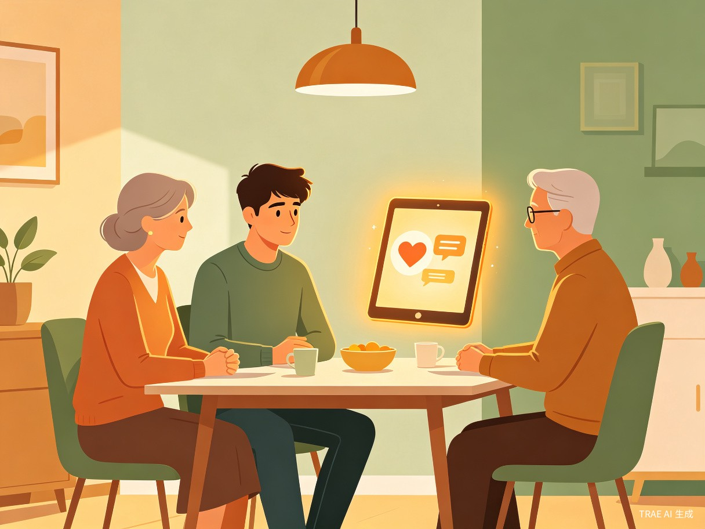

一款面向年轻人的 AI 矛盾调解与沟通助手，从家庭琐事到职场困境，用智慧化解冲突，用共情重建连接。
从校园走向社会的过渡期，年轻人面临着前所未有的关系挑战。家庭期望、职场规则、社交压力交织在一起，却缺少一个能真正理解他们的"倾听者"。
父母期望与个人追求的冲突，催婚、职业选择、生活方式差异让沟通变得困难，"说了你也不懂"成为常态。
刚毕业的大学生面对职场人际关系无所适从——如何与领导沟通、如何处理同事矛盾、如何维护自身权益。
恋爱中的沟通障碍、分手后的情绪管理、亲密关系中的边界问题，年轻人缺乏健康的情感处理模板。
和睦助手不是冷冰冰的工具，而是一个随时陪伴的"智慧朋友"，在你需要的时候给出专业、温暖的建议。

帮助用户理解父母的出发点，学会非暴力沟通。无论是过年回家的催婚压力，还是日常生活中的观念碰撞，和睦助手都能提供情境化的沟通话术和心理学建议。
家庭矛盾为职场新人提供向上管理、平级协作、冲突化解的实战策略。从"如何拒绝不合理加班"到"如何优雅地提出加薪"，让沟通有策略、有温度。
职场沟通专为刚走出校园的大学生设计，帮助适应社会规则、建立健康的人际边界。从租房纠纷到社交焦虑，提供系统性的社会适应指南。
校园新人处理更广泛的社会矛盾——邻里纠纷、消费维权、网络冲突等。通过法律常识普及和沟通技巧指导，让用户在面对社会关系时更有底气。
社会关系基于大语言模型与心理学框架，和睦助手提供从情绪疏导到行动方案的完整支持链路。
通过自然语言理解用户的情绪状态，识别焦虑、愤怒、委屈等深层情绪，提供针对性的情绪疏导和共情回应。
根据矛盾类型、关系亲疏、文化背景等因素，生成个性化的沟通话术和行动建议，而非泛泛的心灵鸡汤。
内置非暴力沟通、认知行为疗法、家庭系统理论等专业知识，用通俗语言解释矛盾背后的心理机制。
记录用户的沟通成长轨迹，定期复盘关系改善情况，帮助用户建立长期的健康沟通习惯。
无需复杂操作，像和朋友聊天一样自然。
用自然语言讲述你遇到的矛盾和困扰，AI 自动理解情境和情绪
AI 从多维度分析矛盾根源，识别双方立场和潜在解决方案
获得个性化的沟通话术、行动建议和心理学知识支持
追踪沟通效果，复盘改进，逐步建立健康的人际关系模式
"真正的和睦，不是没有矛盾，而是在矛盾中依然愿意理解彼此。和睦助手想做的，就是成为那个帮助年轻人找到理解之路的桥梁。"
和睦助手的社会价值远超一个工具产品——它正在填补一个长期被忽视的空白。
调查显示，超过 85% 的应届毕业生表示在面对人际关系冲突时"不知道该怎么办"，学校教育中几乎没有相关训练。
不同于心理咨询的高门槛和高成本，和睦助手 24 小时在线，零等待、零费用，让每个人都能获得及时的帮助。
千千万万个健康的人际关系，构成了社会和谐的底层基础。帮助年轻人处理好身边的关系，就是在为更美好的社会贡献力量。
和睦助手将前沿 AI 技术与心理学专业知识深度融合，打造有温度的智能体验。
和睦助手的核心用户群体清晰明确，需求真实且迫切。
刚走出校园，面对职场、租房、社交等全新挑战，急需一个"社会生存指南"来帮助适应。
在职场人际关系中摸索前行，需要向上管理、同事协作、冲突处理等实战沟通技巧。
在亲密关系中面临沟通障碍、价值观差异等问题，希望找到健康的相处模式。
和睦助手，用 AI 的智慧与人文的温度，帮助每一个年轻人学会沟通、理解与和解。
关注大赛进展 →